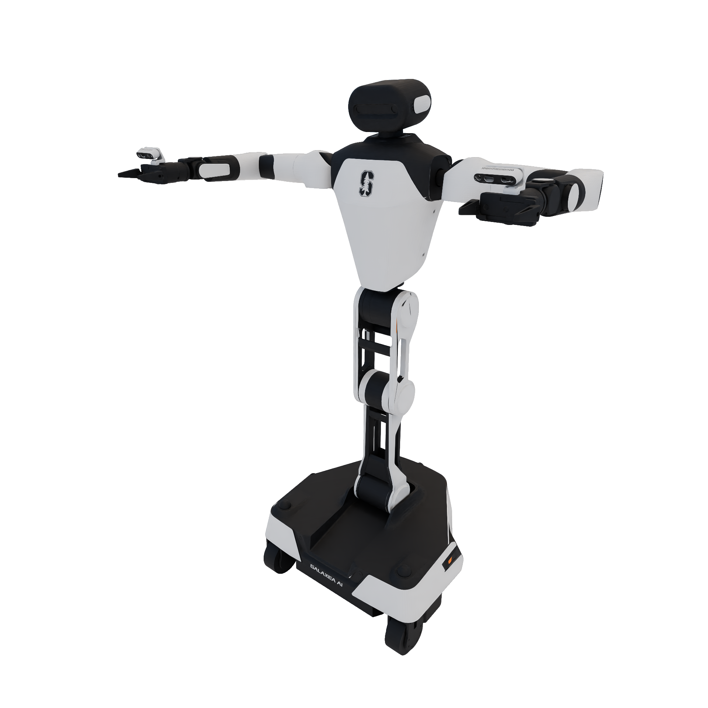

현재 환경 확인부터 handoff 검증, pick/place teacher와 HIL, student 학습까지 다음 할 일을 정리했습니다. 다음 실행 순서 보기
PRIVILEGED STATE → TEACHER → STUDENT
pick과 place_on,
teacher부터 이해하기.
다섯 태스크의 skill 구간을 묶어 두 정책을 학습합니다.
현재 teacher 계획은 상태 기반 Gaussian actor와 SAC/RLPD + 사람 교정입니다.
halve_an_egg · store_honey · cook_broccolini
make_rose_centerpieces · picking_up_trash
전체 태스크 완주가 아닌 pick·place_on skill 학습입니다. 태스크마다 정책을 하나씩 만드는 구성과 다릅니다.
원본 데모 → 선택적 BC → 사람 개입 RL → 무개입 평가 → 영상 student distillation. 최신 전체 그림과 실행 계획 보기
코드가 RL에 넘기는 상태가 낯설지 않게 학습·시작 조건·controller를 맞춥니다. 논문 5편과 전환 상태 그림 보기 →
Base·torso·양팔의 시작 상태와 센서 추정 오차를 함께 다룹니다. 접근·gate·종료 검사까지 정답 위치 없이 실행하고 teacher부터 같은 경로로 학습합니다. Student 포함 정보 흐름·학습 순서 보기 →
BC와 RL에서 어떤 데이터를 사용하는지, place_on 상태 그림으로 살펴보세요. 그림과 자세한 설명 보기
Torso는 로봇의 몸통입니다.
바퀴가 있는 base와 양팔 사이를 연결하며, 팔이 작업할 높이와 자세를 바꿉니다.

양팔 · 각 7 DOFTorso · 4 DOFBase · 3 DOF팔을 뻗는 것만으로는 부족할 때
테이블 높이, 물체 위치, 팔의 관절 한계에 맞춰 몸통 자세를 함께 바꿉니다. R1Pro의 torso는 단순한 높이 조절 축 하나가 아니라 4개 관절로 이루어집니다.
qpos/torso는 그 네 관절의 위치값입니다. 코드에서 몸통 controller를 trunk라고 부르기도 합니다. [2]
기본 데모 행동 벡터: 23차원
base 3 + torso 4 + 왼팔 7 + 왼그리퍼 1 + 오른팔 7 + 오른그리퍼 1. 손가락의 물리 관절 수와 그리퍼 command 차원은 다를 수 있습니다. [3]
WATCH / OFFICIAL DEMO
실제 skill 동작을 먼저 보세요.
움직이는 바퀴, 몸통, 팔을 구분해 보세요. 아래 영상은 공식 BEHAVIOR skill 소개 영상이며 Gaussian teacher의 학습 결과는 아닙니다.
YouTube에서 영상 보기Gaussian actor는 큰 모델 이름이 아닙니다.
신경망이 행동의 평균 μ와 표준편차 σ를 정하는 정책입니다. 보통 작은 MLP로 시작할 수 있습니다.
평균 행동과 탐험을 구분하기
한 행동 차원의 개념도입니다. 주황 선은 평균 μ=0, 점은 샘플입니다. 평가·증류에서는 평균 행동을 사용하는 방법도 있습니다.
WHAT IS ALREADY AVAILABLE?
학습 알고리즘은 제공됩니다.
Skill 환경 연결은 별도입니다.
Stable-Baselines3의 PPO + MlpPolicy: 연속 행동에서 diagonal Gaussian actor와 critic. [4]
RLinf의 BEHAVIOR PPO 예제: VLA용 rollout·환경 연결을 참고할 수 있으나, 상태 기반 Gaussian skill teacher의 완성 예제는 아닙니다. [5]
목표 조건·privileged 관측, skill 시작 reset, reward, 성공 판정, Gymnasium 인터페이스.
PPO 연결 코드의 형태 보기
from stable_baselines3 import PPO
# 직접 구현할 부분: 관측·skill reset·reward·success/done
# Gymnasium-compatible 환경이며 연속 Box action_space를 제공해야 함
env = SkillTeacherEnv(skill="pick", tasks=SELECTED_FIVE_TASKS)
model = PPO(
"MlpPolicy", env,
policy_kwargs={"net_arch": dict(pi=[256, 256], vf=[256, 256])},
device="cuda", verbose=1,
)
model.learn(total_timesteps=5_000_000)구조를 설명하는 예시입니다. SkillTeacherEnv는 제공된 실행 코드가 아니라 필요한 wrapper의 이름입니다. 500만 step은 실험 예산 예시이며 수렴 보장이 아닙니다. place_on은 별도 actor로 학습합니다.
TD3 같은 알고리즘은 결정론적 actor를 학습합니다. ACT·DP·flow의 선택은 행동 표현과 RL 연결 방법의 문제입니다. Privileged teacher와 영상 student의 구조도 서로 달라도 됩니다. [6]
46차원보다 중요한 것은
각 자리의 의미입니다.
“46차원 고정이므로 여러 태스크를 처리할 수 없다”는 설명은 과도했습니다. 같은 길이와 의미로 변환하면 고정 차원으로도 여러 태스크를 학습할 수 있습니다.
입력 길이는 일치해야 합니다.
task_encoder = Linear(46, 512)
task_info.shape == (46,) # 길이 일치
task_info.shape == (79,) # 그대로 넣으면 shape 오류79차원은 설명용 숫자이며 다섯 태스크 중 특정 태스크의 실측 차원이 아닙니다. 고정된 46은 기본 state-DP 설정값입니다. [7]
길이가 같아도 순서가 달라질 수 있습니다.
목표 표시나 객체 역할 구분이 없다면 같은 숫자 위치가 다른 의미가 됩니다. 이름이 다른 객체를 일관된 역할로 정렬하면 해결할 수 있습니다.
권장 출발점: 역할별 고정 슬롯
객체 예시는 실제 annotation의 특정 episode를 재현한 것이 아닙니다. 목표 물체·지지면은 해당 skill annotation에서 읽어야 합니다. 더 많은 객체를 처리하려면 object token + attention + mask로 확장할 수 있습니다.
BEHAVIOR task 관측은 객체별 존재 여부, 위치, 방향, 파지 여부를 생성합니다. 이 전체 목록의 길이와 flatten 순서는 선택한 task·버전·관측 구성에 따라 확인해야 합니다. 아직 다섯 태스크의 실제 task_info 길이를 측정하지 않았습니다. [8]
학습 시간은 GPU 이름보다
실제로 수집한 step/s에 달려 있습니다.
작은 Gaussian MLP에서는 물리 시뮬레이션·reset·CPU 작업이 병목이 될 수 있습니다. 아래 수치는 GPU 실측 결과가 아닌 예산 계산입니다.
GDDR7 · 메모리 대역폭 1,792 GB/s [9]
정책 자체보다 환경 프로세스가 메모리를 많이 쓸 수 있습니다.GDDR7 ECC · 메모리 대역폭 1,792 GB/s [10]
더 많은 환경이 들어갈 가능성이 있지만, 3배 속도가 보장되지는 않습니다.GPU 1장 · 상태 기반 teacher
동일한 다섯 태스크에서 공유 pick·place_on 두 정책을 학습. rollout 중 카메라 영상 생성을 생략할 수 있도록 설정하고, CPU·RAM도 함께 확인합니다.
PRO 6000은 Blackwell Workstation 기준. 다른 edition과 RTX 6000 Ada는 별도 조건입니다.INTERACTIVE / BUDGET, NOT A BENCHMARK
내 처리량으로 계산하기
순 처리량은 PPO 업데이트와 reset 시간까지 포함한 실제 transition 수 ÷ 경과 시간입니다. Physics substep/s, video FPS, chunk 수/s와 구분합니다.
약 2.3일
설치·데이터 준비·코드 수정 시간은 제외.
같은 예산으로 목표 성공률에 도달하는지는 별도입니다.
| 합산 순 처리량 | 1,000만 transition | 4,000만 transition | GPU별 확인 상태 |
|---|---|---|---|
| 10 /s | 11.6일 | 46.3일 | 5090 / PRO 6000 모두 이 다섯 태스크의 실측 없음 |
| 25 /s | 4.6일 | 18.5일 | |
| 50 /s | 2.3일 | 9.3일 | |
| 100 /s | 1.2일 | 4.6일 |
만약 5090에서 25 transition/s, PRO 6000에서 50 transition/s가 실제로 측정된다면, 합계 2,000만 transition은 각각 약 9.3일과 4.6일입니다. 이 처리량은 설명용 가정이며 GPU 성능 예측값이 아닙니다.
먼저 20–30분을 측정하면 추정이 훨씬 좋아집니다.
- pick·place_on reset과 reward가 동작하는 동일한 환경을 준비합니다.
- 시작 지연을 제외하고 PPO 업데이트·reset이 포함된 루프를 실행합니다.
- 환경 프로세스 수를 1 → 2 → 4처럼 늘리며 순 transition/s와 peak VRAM·CPU 사용률을 기록합니다.
- 다섯 태스크별 수치를 비교하고, 총 예산을 처리량으로 나눕니다. 정책·seed 실행 순서도 반영합니다.
현재 GPU에서 실행한 벤치마크나 학습은 없습니다. 성공률 목표·보상·reset 범위·파지 설정·BC 초기화 유무가 필요한 transition 수를 바꿉니다. RLinf 문서도 BEHAVIOR의 느린 stepping과 환경 프로세스의 메모리 비용을 설명합니다. [5]
RECOMMENDED FIRST EXPERIMENT
모델을 크게 만들기 전에,
skill 환경을 정확히 만드세요.
공통 상태 표현
target·support·context 역할을 통일하고 목표 조건을 넣습니다.
Skill reset·reward
기존 label과 시작 snapshot을 사용하고 성공 조건을 검증합니다.
Gaussian PPO
작은 actor·critic으로 먼저 학습합니다. 데모 BC 초기화는 선택입니다.
Student distillation
Teacher 구조와 별개로 ACT·DP·flow를 선택합니다. Student가 관측 가능한 조건도 맞춥니다.
다섯 태스크에서 두 skill을 공유하므로 정책 수는 2개입니다. 태스크별 분리 실험을 선택하면 최대 10개 정책이 되어 학습 예산도 달라집니다. Behavior-Skill의 snapshot·success 평가 코드는 참고 자료이며 완성된 Gaussian RL trainer는 아닙니다. [11]
근거와 확인 범위
확인일 2026-10-07 · 로봇·데모 설명은 2025 데이터와 OmniGibson v3.7.2 기준. 시간은 계산 시나리오이며 재현 실측이 아닙니다.
- BEHAVIOR Robots — R1Pro와 공식 이미지
- R1 trunk_joint_names — torso_joint1–4
- R1Pro baseline action_keys·차원
- Stable-Baselines3 PPO · Gaussian distribution 구현
- RLinf BEHAVIOR PPO 예제 · 현재 환경·stepping 안내
- Deterministic Policy Gradient Algorithms
- State DP — task encoder input_dim: 46
- BehaviorTask._get_obs — 객체별 privileged 관측
- NVIDIA RTX 5090 사양
- NVIDIA RTX PRO 6000 Blackwell Workstation 사양
- Behavior-Skill — 독립 skill 평가와 시작 상태
- BEHAVIOR 공식 영상 출처